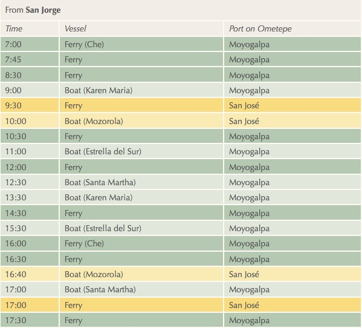
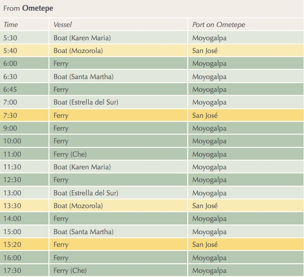

Getting Here
Ometepe Ferry Schedule
Ferries run daily between San Jorge (mainland) and Moyogalpa (Ometepe Island). From Moyogalpa, Los Ramos is 16 km south — we can help arrange transport.
Schedules may change seasonally. We recommend confirming times locally or emailing us at losramoscommunity@gmail.com before your trip.
San Jorge → Ometepe

Ometepe → San Jorge
